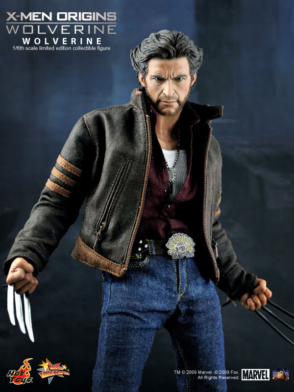
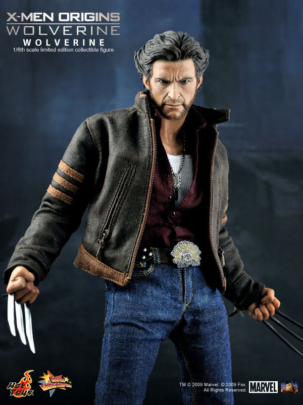

The Wolverine
If you cage the beast, beast will get angry
If you cage the beast, beast will get angry

Born the second son of wealthy landowners John and Elizabeth Howlett in Alberta, Canada during the late 19th Century, James Howlett was a frail boy of poor health. James was largely neglected by his mother, who was institutionalized for a time following the death of her first son, John Jr., in 1897. He spent most of his early years on the estate grounds and had two playmates that lived on the Howlett estate with him: Rose, a red-headed girl who was brought in from town to be a companion to young James, and a boy nicknamed "Dog" who was the son of the groundskeeper, Thomas Logan. Thomas Logan was an alcoholic and was extremely abusive to his son. The children were close friends but as they reached young adulthood, the abuse inflicted upon Dog warped his mind. His actions would lead to a tragic chain of events. that started as the three neared their adolescent years when Dog made unwanted advances toward Rose and James reported it to his father. In retaliation Dog killed James's pet dog. This in turn resulted in the expulsion of Thomas Logan and Dog Logan from the estate.
Thomas Logan, in a drunken stupor, invaded the Howlett estate with his son and attempted to take Elizabeth Howlett (implied to be his former lover) with him. John attempted to stop him and Thomas Logan shot him down in cold blood. James Howlett had just entered the room when this occurred and for the first time his mutation manifested; his claws extended from the backs of his hands and he attacked the intruders with uncharacteristic ferocity, killing Thomas Logan, and scarring Dog's face with three claw marks. Elizabeth Howlett, who was already an emotionally disturbed woman, took her life immediately afterward with a blast from Thomas's gun. Fearing for their safety, Rose fled the estate with James, who appeared to have been deeply traumatized and had somehow repressed or forgotten most of the memories of life back at the estate. Dog falsely reported to the police and James's grandfather that Rose had murdered John Howlett II and Thomas Logan. The eldest Howlett, shunned James and with no family left, took Dog in as his ward. However, Dog was already a burgeoning psychopath and it was too late for his character to evolve down any other path.
In the years that followed, James and Rose took refuge in a British Colombia mining colony under the guise of being cousins. James also assumed the name of "Logan" in order to hide his identity. As the hard work of mining toughened his body, and his mutant powers developed, he grew to be unusually strong and ferocious. He was immune to the elements and even ran with the wolves in the forest, learning to hunt as an animal hunts. "Logan" became a valuable and admirable figure amongst the small community of miners due to his hard work and strong ethics, earning him the respect of his peers, including the foreman Smitty, who became a surrogate father figure to James. During this period, James developed strong feelings for Rose, but could not act on them for the sake of their guise as cousins. Smitty, who had been mentoring James all these years, had also grown close to Rose, and the two eventually fell in love and becaChap 1 Born the second son of wealthy landowners John and Elizabeth Howlett in Alberta, Canada during the late 19th Century, James Howlett was a frail boy of poor health. James was largely neglected by his mother, who was institutionalized for a time following the death of her first son, John Jr., in 1897. He spent most of his early years on the estate grounds and had two playmates that lived on the Howlett estate with him: Rose, a red-headed girl who was brought in from town to be a companion to young James, and a boy nicknamed "Dog" who was the son of the groundskeeper, Thomas Logan.
Dog hunted James and Rose down so easily that it seemed he had a preternatural skill for tracking. On then night that Smitty was due to leave the mining town with Rose, Dog (who bears an uncanny resemblance to Logan's future nemesis, Sabretooth) finally found and confronted James. Dog reminded James of his past, and that faithful night back on the estate that had changed all their lives so. The two fiercely fought in the middle of the street and despite being the physically stronger of the two Dog was eventually overpowered by the enraged James. He then fled into the woods where he lived in self-imposed exile with a pack of wolves, presumably for many years. Logan possesses memories of being a Samurai in Japan, a mercenary operative for the Central Intelligence Agency, and a "wild man" in the Canadian wilderness. Due to extensive memory implants given to Logan through the Weapon X program, any or all of these memories are suspect. Logan has at least one memory of meeting Captain America (Steve Rogers) in World War II while he was in the Canadian Army which has been verified as true. Sometime after World War II, Logan was taken by a group of scientists led by Dr. Cornelius as part of the Weapon X program. Cornelius was hired to perfect and use a technique that would bond the indestructible element adamantium to human bone cells. Logan's skeleton was bonded to the adamantium, and he was indoctrinated into the Weapon X assassin program.
Wolverine was conscripted by Department H, and for his first mission was sent against the incredible Hulk. Wolverine was subsequently approached by Professor Charles Xavier, who was looking for mutants to help his students, the X-Men, escape from the island-being known as Krakoa, which had captured them. Wolverine left Alpha Flight to accompany Xavier and rescue the captured X-Men. After Krakoa was defeated, Wolverine decided to stay with the X-Men, for reasons which included that he had fallen for Marvel Girl (Jean Grey). Logan remained with the X-Men for quite some time, at one time being their field commander, and encountered adversaries such as Proteus (Kevin MacTaggart), Magneto (Magnus), the Brotherhood of Evil Mutants, the Brood, the Reavers, demons from the dimension of Limbo, the Marauders, the Morlocks, and even Dracula on one occasion. After his encounter with the mutant assassin Omega Red, Logan began to question the memories he possessed, but his searches to find his true identity and memories proved fruitless. During an encounter with the mutant Magneto on his space station called Avalon, Wolverine slashed Magneto with his claws. Magneto retaliated, using his powers of the magnetic field to tear the adamantium out of Wolverine's skeleton, causing extensive injuries. These injuries shorted out Wolverine's healing factor for a time, and Logan also discovered that the claws that he believed a result of the Weapon X project were in fact part of his actual bone structure due to his mutation. These bone claws became Wolverine's main weapons until his skeleton later became grafted to adamantium again. As a result of his injuries, Logan left the X-Men for a time.
Wolverine was ambushed by the Hand and Hydra. Transformed into a killing machine and outfitted with several devices, he battled various other heroes and killed both Hornet and Northstar. S.H.I.E.L.D. was eventually able to deprogram Logan, and he was sent to oppose Northstar, who also had been resurrected by Hydra. While on a mission in the Savage Land, he met the recently reformed Avengers and eventually accepted membership. Recently, Wolverine unnerved many high level officials, including those of S.H.I.E.L.D., by his sporadic movements in and out of the grid, with the tensions mounting in what seemed to be Wolverine's attempted assassination of the prime minister of Japan. Eventually it was revealed that Wolverine's true target was not the prime minister, but his bodyguard, the Silver Samurai. During an interrogation that began during their battle, and ended shortly after Logan severed the samurai's arm, Wolverine received some more information that led him back to Department H. Despite what he had originally thought, it was not the carelessness of his captors that allowed him to escape; rather, the Winter Soldier seemingly interfered with the operation in such a way that allowed Logan's escape. Wolverine tracked down the Winter Soldier in Serbia for information, but was rendered unconscious after a struggle after which the Winter Soldier revealed that he had earlier murdered Logan's pregnant wife.


 
